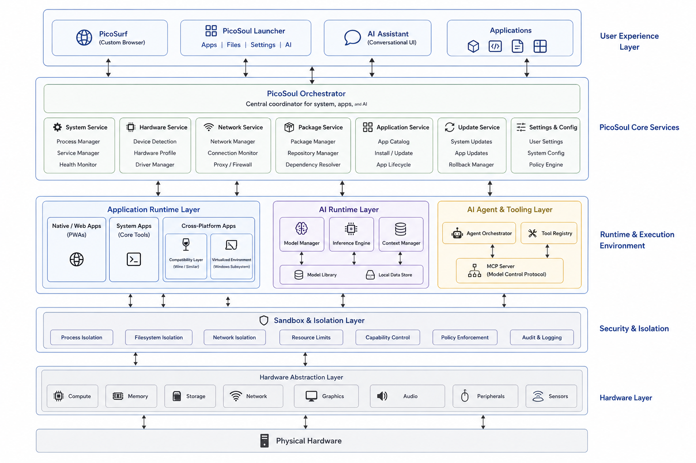

AI-Native.
Compact. Secure.
PicoSoul is an exploration of what a modern personal computer could look like when the operating environment is designed around lightweight software, local intelligence, privacy and user control.
What if the computer got out of the way?
PicoSoul is not about building another heavyweight desktop stack. It is about assembling a small, practical computing environment from proven components — and putting a simple orchestration layer over the top.
Today's personal computers carry an enormous amount of software, services and background infrastructure. Much of it is necessary for compatibility, security and the modern web — but the result is a system that can feel disproportionately large for the work people actually do.
PicoSoul starts from the opposite direction: keep the foundation small, add only what the machine needs, make applications feel unified, and use local AI as an interface to the computer rather than another cloud dependency.
The goal is not to replace everything overnight. The goal is to create a practical environment where lightweight web applications, native applications and existing desktop software can coexist behind one simple experience.
PicoSoul aims to hide the complexity underneath while keeping the underlying system modular, inspectable and replaceable.
Small software. Local intelligence. User control.
The same thinking behind PicoAI's applications, extended to the computing environment itself.
Small by design
Start with a compact foundation and add capabilities only when they are actually needed.
AI where it helps
Let AI handle ambiguity, discovery and orchestration while predictable software handles predictable work.
Private by default
Local processing, controlled permissions and explicit boundaries should be the default rather than an advanced setting.
Built from components
Reuse mature runtimes, services and open technologies instead of rebuilding the computing stack from scratch.
A thin orchestration layer over proven building blocks.
PicoSoul is intended to be an integration and experience layer, not a reinvention of every component underneath it.

Four layers. One experience.
The architecture separates the user experience from system services, execution environments and hardware.
A simple user layer
A familiar desktop experience with one launcher, one settings surface and one place to interact with local AI.
- PicoSoul Launcher
- PicoSurf
- Applications & files
- Conversational assistant
System orchestration
A central coordinator connects hardware, packages, applications, updates, policies and AI capabilities.
- Hardware detection
- Package & application management
- Network & system services
- Updates, settings & policy
Multiple application worlds
Different application types should coexist without forcing the user to understand how each one runs underneath.
- Web / PWA applications
- Native applications
- Compatibility environments
- Virtualized environments
Intelligence as infrastructure
A local inference layer provides the intelligence needed for assistance, discovery, automation and system interaction.
- Model management
- Local inference
- Context management
- Tool & agent orchestration
Security & isolation
AI and applications operate within explicit boundaries rather than receiving unrestricted access to the underlying machine.
- Process isolation
- Filesystem boundaries
- Network controls
- Permissions & audit
Hardware abstraction
The system detects the machine and provisions the capabilities required by the hardware instead of assuming one fixed setup.
- Compute & memory
- Storage
- Graphics & audio
- Network & peripherals
Not another application. A different foundation.
Traditional approach
Install a large general-purpose environment first. Then add applications, services, AI tools and integrations on top of it. The user has to understand — or tolerate — much of the underlying complexity.
PicoSoul approach
Start compact. Detect the hardware. Provision what is required. Present one coherent application experience. Let local AI help the user interact with the system while explicit policies keep control with the user.
Build the glue, not the universe.
The first versions should prove the experience before attempting a completely custom desktop or distribution.
The computer should work for you — not become another thing you have to manage.
An experiment by PicoAI exploring a smaller, more private and AI-native personal computing experience.